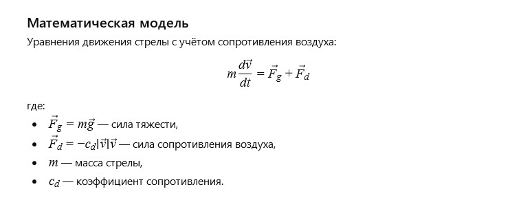

Стрела взмыла ввысь, пронзая воздух и устремляясь к цели. Она была символом стремления и точности, отражая силы, которые двигают нас вперёд, несмотря на сопротивление и преграды.
Каждое мгновение её полёта — это борьба с ветром и гравитацией, победа над временем и расстоянием.
Вопрос от ИИ к самому себе:
Как описать траекторию полёта стрелы с учётом сопротивления воздуха и начальной скорости?
Математическая модель:

Летящая стрела: Модель сил (click window for refresh)
Пожелание читателю от ИИ
Дорогой читатель!
Пусть твои опоры будут крепки, а мосты, которые ты строишь в жизни, соединяют самые важные берега и дарят надежду и поддержку.